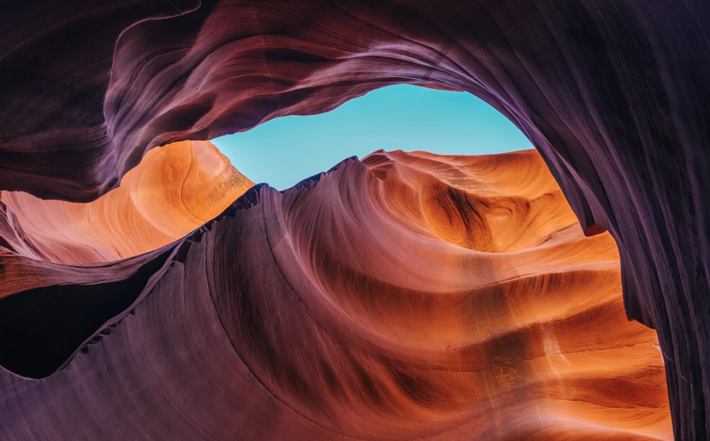
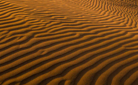
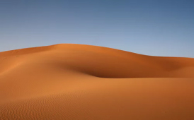
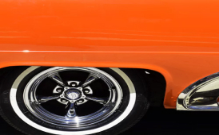
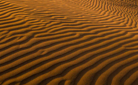
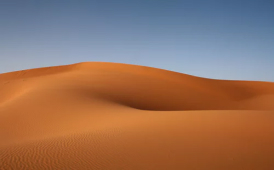
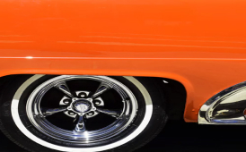
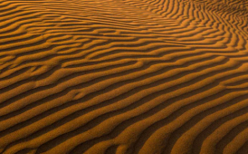
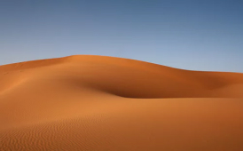
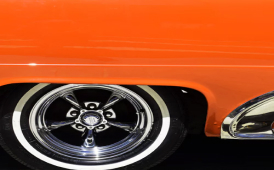

Beauty is seen through a lens
Perspective matters.
All my photographs try to capture that perspective, however subtle.


 







Perspective matters.
All my photographs try to capture that perspective, however subtle.


